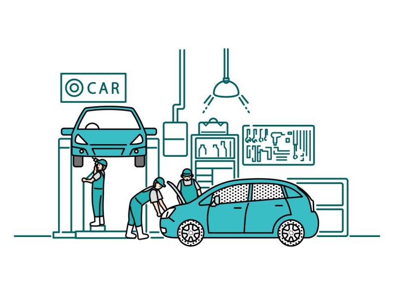

L
egend Motors
Back
Patrs Repair

“Changing auto parts is an essential service to maintain the health and safety of the vehicle, and to ensure its efficient performance.” Changing car parts periodically protects the owner from potential problems in the future, and maintains the value of the car and its high efficiency. “Regularly changing auto parts maintains optimal performance and extends the life of the vehicle.” "Replacing worn out or damaged car parts helps reduce the risk of accidents and damages." "Regular change of spare parts helps improve fuel consumption and reduce harmful emissions to the environment." "Regularly changing auto parts helps improve engine performance and reduce oil and other fluid consumption." “Regular replacement of car parts ensures that the internal components of the car are maintained in good condition, which enhances performance efficiency and preserves its value.” Changing car parts periodically ensures that there are no technical problems in the car, which provides psychological comfort for the owner and helps him avoid potential problems in the future. "Regularly changing car parts is a good investment in the health and safety of the car, and maintains the safety of the owner and its passengers on the road."z\w